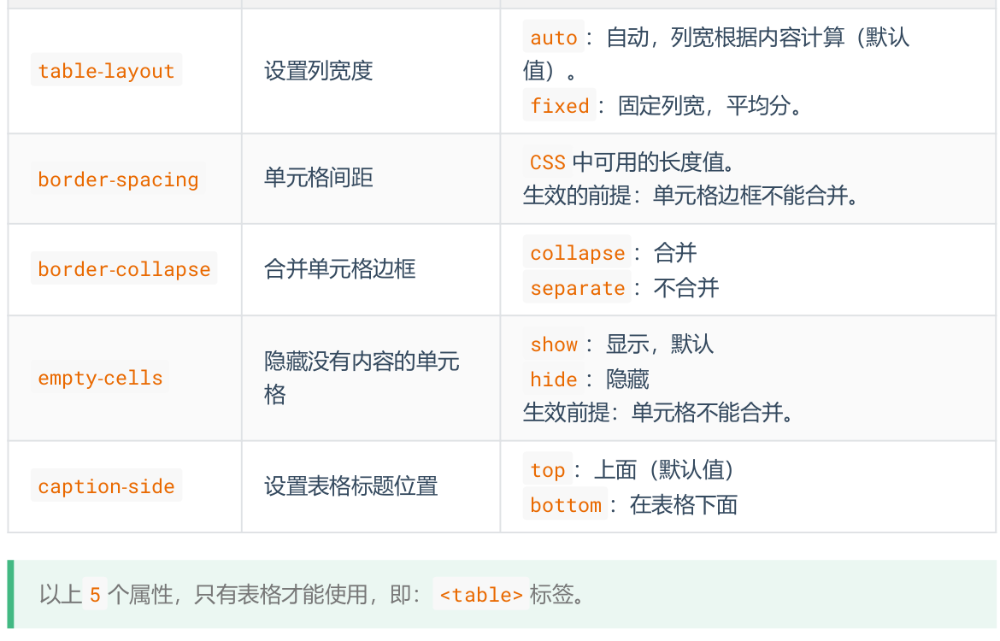
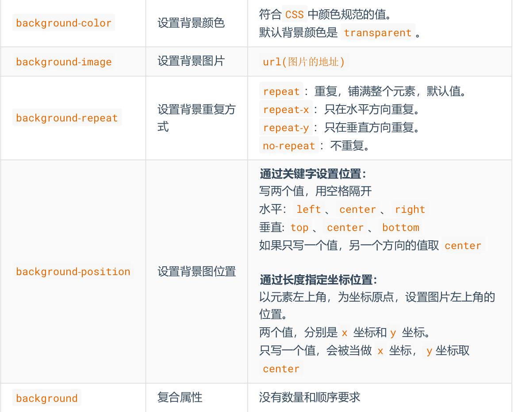
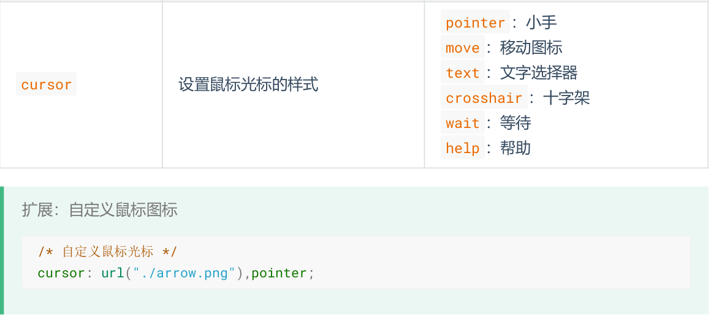

css选择器

1. 基本选择器
1.1 通配选择器
/* 选中所有元素 */
* {
color: orange;
font-size: 40px;
}
1.2 元素选择器
文档的元素就是元素选择器,是最基本的选择器
html { color:black; }
h1 { color:blue; }
h2 { color:silver; }
1.3. 类选择器
类选择器允许以一种独立于文档元素的方式来指定样式.
<h1 class="important">
This heading is very important.
</h1>
.important {color:red;}
1.4. ID选择器
ID选择器允许以一种独立于文档元素的方式来指定样式
<p id="intro">This is a paragraph of introduction.</p>
#intro {font-weight:bold;}
2. 复合选择器
2.1 交集选择器
选中同时符合多个条件的元素
/* 选中:类名为beauty的p元素, 为此种写法用的非常多!!!! */
p.beauty {
color: blue;
}
/* 选中:类名包含rich和beauty的元素 */
.rich.beauty {
color: green;
}
2.2 并集选择器
选中多个选择器对应的元素(以','分隔), 被分组的选择器就可以分享相同的声明, 又称:分组选择器
h1,
h2,
h3,
h4,
h5,
h6 {
color: green;
}
2.3. 后代选择器
后代选择器可以选择作为某元素后代的元素(以空格分隔)
h1 em {color:red;}
2.4. 子代选择器
与后代选择器相比, 子元素选择器只能选择作为某元素子元素的元素(以>分隔).
h1 > strong {color:red;}
2.5. 相邻兄弟选择器
相邻兄弟选择器 (Adjacent sibling selector) 可选择紧接在另一元素后的元素, 且二者有相同父元素(以+分隔).
h1 + p {margin-top:50px;}
2.6. 属性选择器
属性选择器可以根据元素的属性及属性值来选择元素.
2.6.1. 简单属性选择
如果您希望把包含标题 (title) 的所有元素变为红色, 可以写作:
*[title] {color:red;} // 把包含标题 (title) 的所有元素变为红色
a[href] {color:red;} // 只对有 href 属性的锚 (a 元素) 应用样式
a[href][title] {color:red;} // 将同时有 href 和 title 属性的 HTML 超链接的文本设置为红色
img[alt] {border: 5px solid red;} // 所有带有 alt 属性的图像应用样式, 从而突出显示这些有效的图像
2.6.2. 根据具体属性值选择
a[href="http://www.w3school.com.cn/"][title="W3School"] {color: red;} // 把多个属性-值选择器链接在一起来选择一个文档
p[class="important warning"] {color: red;} // 根据具体属性值来选择该元素
| 选择器 | 描述 |
|---|---|
| [attribute] | 选取带有attribute属性的元素. |
| [attribute=value] | 选取attribute属性值为value的元素. |
| [attribute~=value] | 选取attribute属性值中包含value的元素. |
| [attribute|=value] | 选取attribute属性值等于value或value开头的元素, 该值必须是整个单词. |
| [attribute^=value] | 选取attribute属性值value开头的每个元素. |
| [attribute$=value] | 选取attribute属性值value结尾的每个元素. |
| [attribute*=value] | 选取attribute属性值包含value的每个元素. |
2.7. 伪类
伪类用于向某些选择器添加特殊的效果
selector : pseudo-class {property: value}
2.7.1. 锚伪类
a:link {color: #FF0000} /* 未访问的元素 */
a:visited {color: #00FF00} /* 已访问的元素 */
a:hover {color: #FF00FF} /* 鼠标悬停在元素上 */
a:active {color: #0000FF} /* 激活的元素 */
a:focus {color: #0000FF} /* 获取焦点的元素 */
2.7.2. 结构伪类
:first-child所有兄弟元素中的第一个.:last-child所有兄弟元素中的最后一个.:nth-child(n)所有兄弟元素中的第 n 个.:first-of-type所有同类型兄弟元素中的第一个.:last-of-type所有同类型兄弟元素中的最后一个.:nth-of-type(n)所有同类型兄弟元素中的第n个.:nth-last-child(n)所有兄弟元素中的倒数第n个.:nth-last-of-type(n)所有同类型兄弟元素中的倒数第n个.:only-child选择没有兄弟的元素 (独生子女).:only-of-type选择没有同类型兄弟的元素.:root根元素.:empty内容为空元素 (空格也算内容).:not(选择器)排除满足括号中条件的元素.:checked被选中的复选框或单选按钮.:enable可用的表单元素 (没有disabled属性).:disabled不可用的表单元素 (有disabled属性):target选中锚点指向的元素.:lang()根据指定的语言选择元素 (本质是看 lang 属性的值).
2.8. 伪元素
伪元素用于向某些选择器设置特殊效果
selector:pseudo-element {property:value;}
2.8.1. "first-line"伪元素
"first-line" 伪元素用于向文本的首行设置特殊样式.
p:first-line {
color:#ff0000;
font-variant:small-caps;
}
注释:"first-line" 伪元素只能用于块级元素.
**注释:**下面的属性可应用于 "first-line" 伪元素:
- font
- color
- background
- word-spacing
- letter-spacing
- text-decoration
- vertical-align
- text-transform
- line-height
- clear
2.8.2. :first-letter伪元素
first-letter 伪元素用于向文本的首字母设置特殊样式:
p:first-letter
{
color:#ff0000;
font-size:xx-large;
}
注释:"first-letter" 伪元素只能用于块级元素.
**注释:**下面的属性可应用于 "first-letter" 伪元素:
- font
- color
- background
- margin
- padding
- border
- text-decoration
- vertical-align (仅当 float 为 none 时)
- text-transform
- line-height
- float
- clear
2.8.3. :before伪元素
:before伪元素可以在元素的内容前面插入新内容
h1:before{
content:url(logo.gif);
}
2.8.4. after伪元素
:after 伪元素可以在元素的内容之后插入新内容.
h1:after{
content:url(logo.gif);
}
| 属性 | 描述 | CSS |
|---|---|---|
| :first-letter | 向文本的第一个字母添加特殊样式. | 1 |
| :first-line | 向文本的首行添加特殊样式. | 1 |
| :before | 在元素之前添加内容. | 2 |
| :after | 在元素之后添加内容. | 2 |
3. 选择器权重
行内样式 > ID选择器 > 类选择器 > 元素选择器 > 通配选择器.
4. CSS三大特性
4.1. 层叠性
如果发生了样式冲突, 那就会根据一定的规则 (选择器优先级), 进行样式的层叠 (覆 盖).
4.2 继承性
元素会自动拥有其父元素、或其祖先元素上所设置的某些样式. 优先继承离得近的.
4.3 优先级
!important> 行内样式 > ID选择器 > 类选择器 > 元素选择器 > * > 继承的样式
5. CSS常用属性
5.1 颜色
5.1.1 rgb/rgba
/* 使用 0~255 之间的数字表示一种颜色 */
color: rgb(255, 0, 0);/* 红色 */
color: rgb(0, 255, 0);/* 绿色 */
color: rgb(0, 0, 255);/* 蓝色 */
color: rgb(0, 0, 0);/* 黑色 */
color: rgb(255, 255, 255);/* 白色 */
/* 混合出任意一种颜色 */
color:rgb(138, 43, 226) /* 紫罗兰色 */
color:rgba(255, 0, 0, 0.5);/* 半透明的红色 */
/* 也可以使用百分比表示一种颜色 (用的少) */
color: rgb(100%, 0%, 0%);/* 红色 */
color: rgba(100%, 0%, 0%,50%);/* 半透明的红色 */
5.1.2 HEX/HEXA
color: #ff0000;/* 红色 */
color: #00ff00;/* 绿色 */
color: #0000ff;/* 蓝色 */
color: #000000;/* 黑色 */
color: #ffffff;/* 白色 */
/* 如果每种颜色的两位都是相同的, 就可以简写*/
color: #ff9988;/* 可简为:#f98 */
/* 但要注意前三位简写了, 那么透明度就也要简写 */
color: #ff998866;/* 可简为:#f986 */
5.1.3 HSL/HSLA
格式: hsl(色相,饱和度,亮度)/hsla(色相,饱和度,亮度,透明度)
5.2 字体属性
5.2.1 字体大小
font-size控制字体的大小
div {
font-size: 40px;
}
5.2.2 字体族
font-family控制字体类型
div {
font-family: "STCaiyun","Microsoft YaHei",sans-serif
}
5.2.3 字体风格
font-style控制字体是否为斜体
div {
font-style: italic;
}
5.2.4 字体粗细
font-weight控制字体的粗细
lighter:细normal: 正常bold:粗bolder:很粗
div {
font-weight: bold;
}
div {
font-weight: 600;
}
5.2.5 字体复合写法
字体大小、字体族必须都写上, 字体族必须是最后一位、字体大小必须是倒数第二位.各个属性间用空格隔开.
div {
font: 20px "STCaiyun","Microsoft YaHei",sans-serif;
}
5.3 文本属性
5.3.1 文本颜色
color控制文字的颜色
p {
color: rgb(112,45,78);
}
5.3.2 文本间距
- 字母间距:
letter-spacing - 单词间距:
word-spacing(通过空格识别词) - 属性值为像素 (
px) , 正值让间距增大, 负值让间距缩小
5.3.3 文本修饰
text-decoration控制文本的各种装饰线, 可选值:
none: 无装饰线 (常用)underline:下划线 (常用)overline: 上划线line-through: 删除线
5.3.4 文本缩进
text-indent控制文本首字母的缩进.
div {
text-indent:40px;
}
5.3.5 文本水平对齐
text-align控制文本的水平对齐方式:
left: 左对齐 (默认值)right: 右对齐center: 居中对齐
div {
text-align: center;
}
5.3.6 文本垂直对齐
顶部:无需任何属性, 在垂直方向上, 默认就是顶部对齐
居中:对于单行文字, 让 height = line-height 即可
5.3.7 行高
line-height控制一行文字的高度.
div {
line-height: 60px;
line-height: 1.5; /* 参考自身 font-size 的倍数 */
line-height: 150%; /* 参考自身 font-size 的百分比 */
}
5.3.7 vertical-align
vertical-align用于指定同一行元素之间, 或 表格单元格 内文字的 垂直对齐方式, 不能控制块元素.
baseline(默认值) :使元素的基线与父元素的基线对齐.top:使元素的顶部与其所在行的顶部对齐.middle:使元素的中部与父元素的基线加上父元素字母 x 的一半对齐.bottom:使元素的底部与其所在行的底部对齐.
5.4 列表属性
列表相关的属性, 可以作用在 ul 、 ol 、 li 元素上.
list-style-type设置列表符号
none:不显示前面的标识 (很常用!)square:实心方块disc:圆形decimal:数字lower-roman:小写罗马字upper-roman:大写罗马字lower-alpha:小写字母upper-alpha:大写字母
list-style-position设置列表符号的位置
inside:在li的里面outside:在li的外边
list-style-image自定义列表符号, url(图片地址)
list-style复合属性, 没有数量、顺序的要求
5.5 边框属性
border-width边框宽度CSS 中可用的长度值
border-color边框颜色CSS 中可用的颜色值
border-style边框风格
none默认值solid实线dashed虚线dotted点线double双实线
border边框复合属性, 没有数量、顺序的要求
5.6 表格属性

5.7 背景属性

5.7鼠标属性
